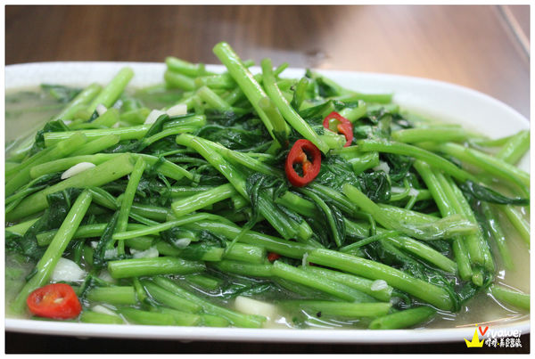

這一間靠近城隍廟的「廟口鴨香飯」是很多人來到城隍廟周邊找小吃的選擇！ 之前在過年期間想要來用餐，發現他們過年期間都是公休阿，整個大撲空， 所以隔了一段時間計畫再次來到新竹，就是一定要吃到他！！！
這邊有可以外帶的鴨翅、鴨舌、鴨脖、鴨頭、鴨腳等種類。
店內的鴨肉就會擺放在這個透明的櫥窗裡面，現點現切，動作還蠻快的！
這是在店內用餐的一些注意事項，告知了他們調漲的訊息，需要紅醬要額外加價。
無論是內用或外帶都要到櫃檯處點餐，都是要先結帳付款的。
一樓處可以看到有員工分工合作的在製作餐點，手腳快，不需要久候，翻桌率也很高。
店內一樓的座位區較少，而且會需要跟別人併桌，若一樓用餐處已經客滿，他們的二樓也還有位置喔！
以上是店內的價目表供參考。
這是我們這次點的餐，因為什麼都想要吃，所以一口氣就點了很多！ 兩個人就這樣吃掉了將近四百塊，單價上稍微偏高，但還算可以接受。
好豐富的一餐啊！我們中午吃了這一餐後，到了晚上幾乎都不覺得餓，可以說是吃一餐飽兩餐阿！
他們的現切鴨肉分為去骨後腿鴨肉、帶骨後腿鴨肉，就看你自己平時喜不喜歡啃骨頭啦！
因為怕麻煩，所以我們就點了去骨的後腿鴨肉，肉質吃起來很札實很彈牙，而且也很多汁，個人蠻喜歡的！ 只是一個人用餐的話可能就無法點來吃了，店家表示MENU上面一份180的鴨肉就是兩人份的， 好像沒辦法跟著用餐的人數作調整，覺得有點可惜！如果可以看人數來調整分量和價格就比較貼心了：）
炒空心菜加入了蒜頭和辣椒，青菜吃起來很清脆，口感還不錯！
因為我們是兩個人一起用餐，就決定點一些小菜和湯品，在另外一份大碗的鴨香飯兩個人互相Share！
用來做鴨香飯的鴨肉還算蠻大塊的，有一定的厚度和口感，一旁搭配小黃瓜，還淋上了鴨油。
我們還另外點了一顆荷包店，只是現在的荷包蛋一顆居然要價15元阿，這蛋價未免也太高了些， 不過真的是要點顆半熟荷包蛋來搭配才會更加分了，這樣子就可以把蛋汁攪拌攪拌，會更香更好吃！
下水湯裡面就是滿滿的鴨內臟，加入薑絲和蔥煮成高湯，比較特別的是這碗湯裡面還加入了酸菜，湯頭很不錯。
只要拿一張名片，裡面就還包含了店內的價目表，想要參考時，就可以直接把名片拿出來看看。
整體而言，會覺得這間「廟口鴨香飯」表現得還算ok，加了半熟蛋的鴨香飯更加分， 現切的去骨鴨腿肉確實也蠻好吃的，可惜的是他們的單價稍微偏高了些， 不過居然都已經來到城隍廟周邊，就找一間還不錯的小吃店坐下來品嘗一番吧！
引自:http://vivawei.pixnet.net/blog/post/5418586-%E6%96%B0%E7%AB%B9%E5%B8%82%E5%8C%97%E5%8D%80%EF%BD%9C%E5%9F%8E%E9%9A%8D%E5%BB%9F%E5%91%A8%E9%82%8A%E7%9A%84%E5%BF%85%E5%90%83%E5%B0%8F%E5%90%83%E3%80%8E%E5%BB%9F%E5%8F%A3%E9%B4%A8